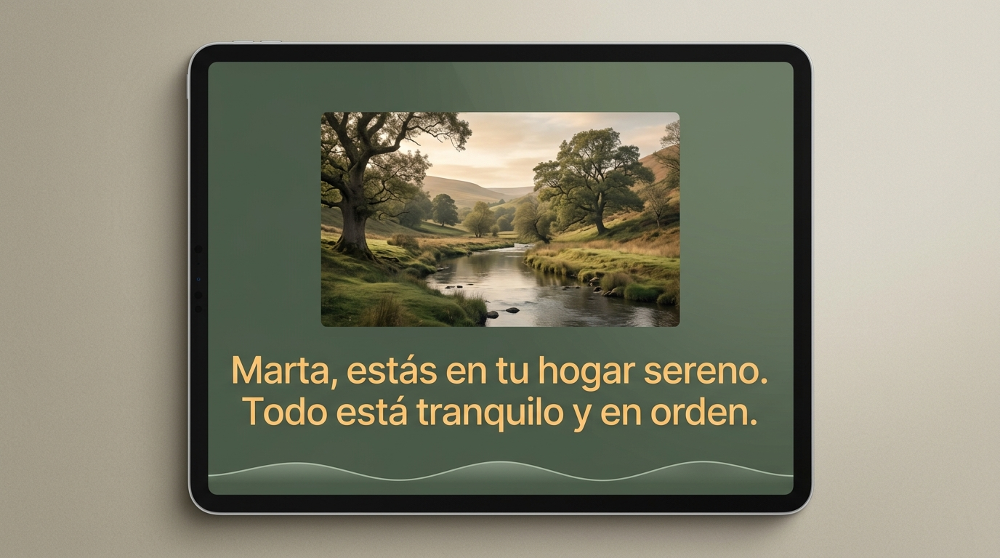

ECOS
Ecosistema Cognitivo de Orquestación Solidaria
Inteligencia Artificial Aplicada a Organizaciones | UTN FRBA 2026
El Desafío
El envejecimiento poblacional y la demencia leve / Alzheimer inicial generan pérdida progresiva de la autonomía y aislamiento social.
❌ Las soluciones tecnológicas tradicionales imponen barreras complejas (menús, botones pequeños) causando frustración.
La Solución: ECOS
Acompañamiento proactivo basado en voz y presencia (Zero-UI).
✅ Estimulación cognitiva por reminiscencia.
✅ Terapia de Validación ante crisis (Síndrome del Ocaso).
✅ Soporte afectivo familiar continuo.
Stack Tecnológico
HTML5 Nativo + CSS Vanilla + JS ES6. Elegido por su velocidad extrema (60 FPS) y cero dependencias pesadas.
JS Nativo + Web Speech API (Voz) coordinando un ciclo cíclico de 7 pasos 100% en el cliente local.
LocalStorage (MemoryStore) en lugar de DB Cloud para garantizar total privacidad médica del paciente (Offline).
Servidor ligero en Python + Hub MCP Rust (Antigravity_multyMCP) para consultas de arquitectura (SOTA).
Estado A: Reposo Activo
Reloj analógico clásico (Gris Neblina). Detección continua de mirada (>3s) para despertar.
Estado B: Estimulación Diurna
Azul Teal Clínico. Fotografías biográficas a gran escala. Apoyo de texto >36pt para mitigar pérdida de audición.
Estado C: Modo Calma / Validación

Verde Oliva biofílico. Activado ante agitación ("¿Dónde está mamá?"). Respuestas afectivas ralentizadas (Pitch: 0.8).
Heurísticas UX (Zero-UI)
- 👁️ Visibilidad del Sistema: Respiración pulsante en pantalla. No requiere tocar botones.
- 🌎 Coincidencia con el Mundo Real: Lenguaje de Terapia de Validación gerontológica.
- 🛡️ Prevención de Errores: Al eliminar la UI interactiva tradicional (0 menús), el margen de error del usuario es nulo.
- 🧠 Reconocimiento sobre recuerdo: Uso del 60% de la pantalla para fotos evocativas, encendiendo la memoria episódica.
Seguridad y Privacidad (Stateless)
🛡️ Prompt Injection: Los Guardrails bloquean manipulaciones verbales. La validación restringe el margen de respuesta sintética a frases cálidas parametrizadas.
🗝️ Aislamiento Dashboard: El Dashboard PWA familiar está aislado lógicamente de la tablet Zero-UI.
El Rol de los SLM Locales (Parte 2)
Inferencia local sin internet con modelos como Llama3.2:1b (Ollama).
¿Por qué Local?
- Latencia Cero: Respuestas en milisegundos evitan angustia en ancianos que esperan feedback.
- Privacidad Total (HIPAA): Audio captado de la intimidad del hogar no viaja por la red.
- Autonomía en Cortes: Funciona sin conexión a servidores en la nube.
Respondió validando parcialmente la desorientación en ~15s (CPU), pero concluimos que nuestro motor híbrido Zero-UI con reglas deterministas es más veloz y terapéutico por ahora.
¡Gracias!
ECOS: Diseñando tecnología que no se siente como tecnología.